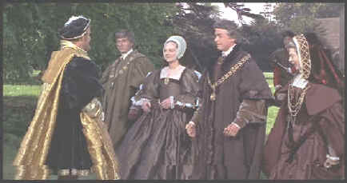

Columbia/1966/120m/ANA 1.85, PS 1.33
A Man For All Seasons was a multiple Academy Award winner in 1966 including Best Picture, Best Director and Best Actor. This very literate film was adapted from writer Robert Bolt's own play. The screenplay won an Academy Award for Bolt. The story centers around Sir Thomas More's conflict with King Henry VIII over the annulment of his barren marriage to enable him to marry Anne Boleyn. More, a friend to the King and one of his most trusted advisors, breaks with Henry on this issue, even dismissing Henry's personal Lordly pleas. The politics surrounding More's decision, the conflict within the Church and its influence in England and imprisonment and trial of Sir Thomas is explored with perspicacious skill. The marvelous interaction between the players brings a great dynamic to a film that despite all the pomp and circumstance lacks much action.
 |
King Henry pays a social call on Sir Thomas More©Columbia |
Examining the morality of
Sir Thomas More is an exercise in intellectual stimulation. I still can't figure out
whether More was as moral as he made out. Was it pride or morality that drove him to
abandon his way of life, his family and friends, and ultimately his life? I suppose it
could supply us with endless debate. What is not debatable is the literacy of Bolt's
screenplay nor Fred Zinnemann's direction and casting.
Paul Scofield plays Sir Thomas More with equanimity. He seems to
take every issue with the same weight, whether weighing life and death or questions of
proper hospitality. Scofield's cold acting style is perfect for Sir Thomas. Think The
Train or Quiz Show, other examples of the icy skill of this classically trained
actor. The right actor married to the right role makes for great performances and such is
the case in A Man For All Seasons. I love Robert Shaw's bravura turn as King Henry.
I think his presence is felt throughout the proceeding even though his screen time is
rather limited. Shaw reigns regally in this role, reminding us that his whim is law. Orson
Welles likewise makes the most of limited screen time as Cardinal Wolsey while Leo McKern
and John Hurt work malevolence beautifully as Oliver Cromwell and Richard Rich.
Zinnemann does a fantastic job of never letting the theatrical
adaptation feel stage bound. The river flows majestically between the various locales. I
am especially fond of the scene outside More's home when Henry comes a courting. The
dialogue and the explosiveness of the situation are brilliantly depicted. This is a first
rank production with spectacularly beautiful costumes and impeccable period detail. Ted
Moore's regal photography was also honored with an Academy Award as was the Costume Design
of Elizabeth Haffenden and Joan Bridge.
Columbia has given A Man For All Seasons a great
anamorphic transfer. God Bless Columbia, long may it wave anamorphically! This is a film
that needs every ounce of resolution to bring its beauty to DVD. Sharp images expose the
artful beauty of this film. Even the grain n the early boat ride from Hampton to Sir
Thomas More's is preserved to perfection. The color range is very fine, a witness the
varied hues in the garb of the Cardinals. There is a persistent suggestion of brown mixed
into the overall color. I did not find it objectionable. The DVD maintains the feeling of
period handsomely. George Delerue's grand score sounds wonderful on the DVD.